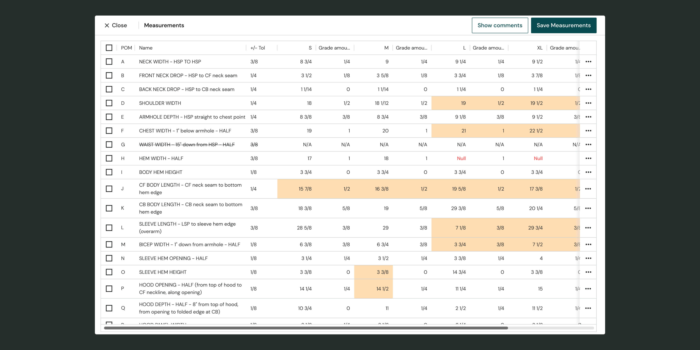
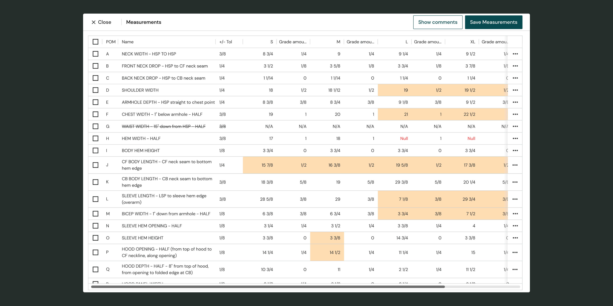

Empowering fashion brands to track their materials and products
Product designer6 Months, 2O22
Overview
Calico is a seed startup that raised 2 million to build a product lifecycle management platform for fashion companies. Their software helps design-focused brands manage everything from sourcing materials, collaborating with factories and tracking on-going orders.
I joined Calico as the first product designer where I led product and design initiatives from discovery to development.
Challenge
- Empower brands scale from one person to a small product team
- Improve sustainability efforts in the fashion industry


 
